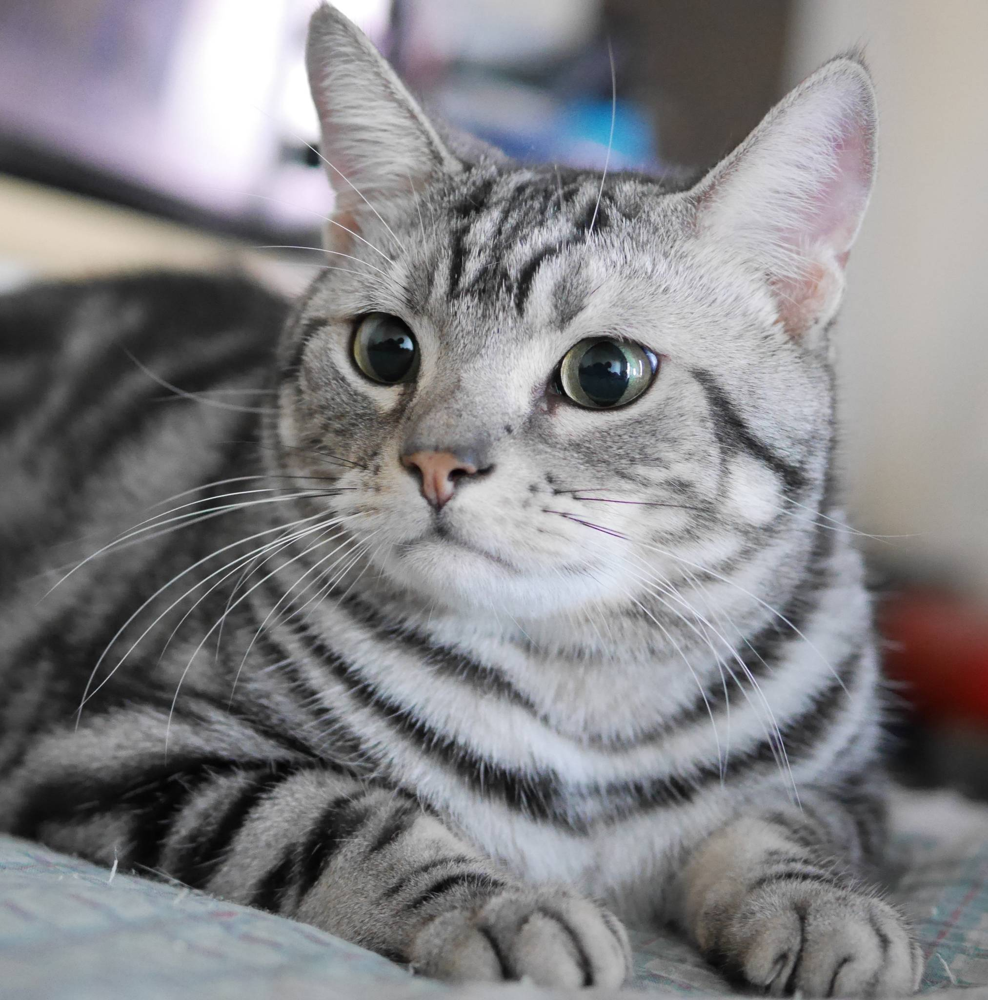

American Shorthair – pracowity łowca, który stał się domowym klasykiem
, zdrowie i umiejętności łowieckie sprawiły, że szybko zadomowiły się na farmach i w miastach. Z czasem zaczęto je selekcjonować, tworząc rasę o stabilnym wyglądzie i charakterze. To kot o harmonijnej budowie, muskularny, ale nie ciężki. Jego krótkie futro jest łatwe w pielęgnacji, a różnorodność umaszczeń – od klasycznego srebrnego tabby po jednolite barwy – sprawia, że każdy znajdzie coś dla siebie. American Shorthair jest spokojny, zrównoważony i bardzo rodzinny. Nie wymaga ciągłej uwagi, ale chętnie uczestniczy w codziennych aktywnościach domowników. Jest inteligentny, lubi zabawy angażujące myślenie i ma w sobie odrobinę niezależności, która dodaje mu uroku. To idealny kot dla osób, które chcą towarzysza, ale niekoniecznie „przylepę”.